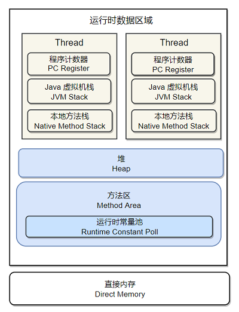
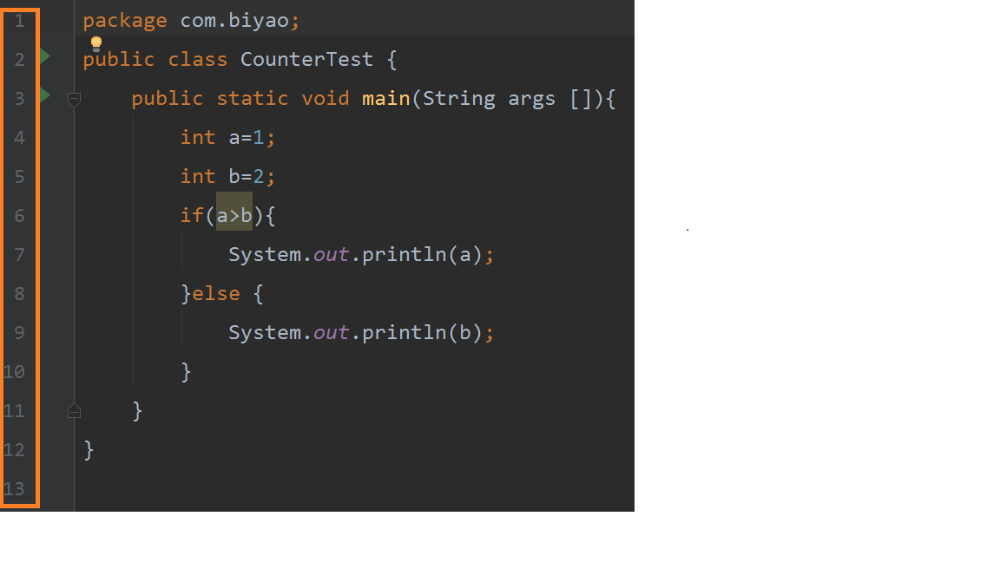
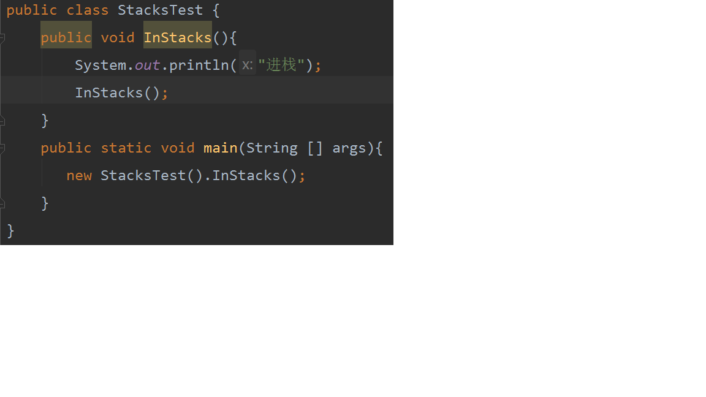
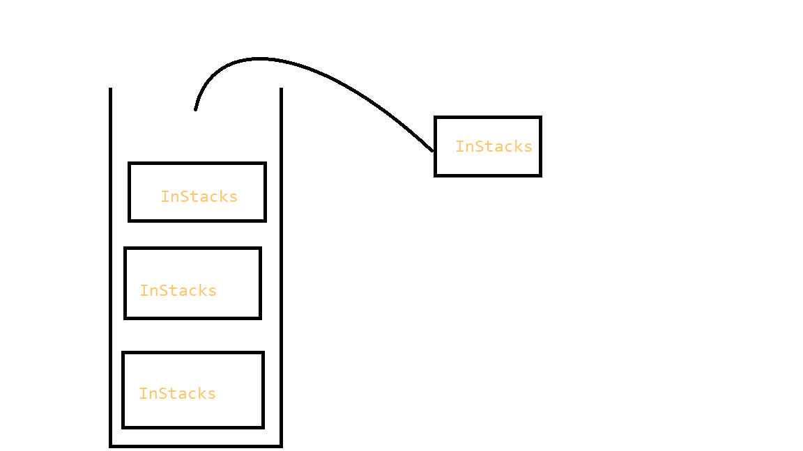

java内存区域
程序计数器
什么是程序计数器
通俗来说，程序计数器是一块较小的内存空间，可以把它看作当前线程字节码行号指示器，它是处于线程的独占区域。这句话是什么意思呢?我们可以用下面一个图来表示
 左边方框其实就可以理解为行号，程序计数器就是记录字节码中的行号，字节码解释器就是改变计数器的值来取下一条执行命令，分支，循环，跳转，异常处理等都需要程序计数器来完成。
如果线程执行的是java方法，这个计数器记录的是正在执行的虚拟机字节码指令的地址。如果正在执行的是native方法，这个程序计数器的值为undefined。
特殊点
这个区域是唯一一个在java虚拟机中没有规定OOM的区域，也就是说在程序计数器中部会出现内存溢出的现象。
java虚拟机栈
什么是java虚拟机栈
虚拟机栈描述的是java方法执行的动态模型。
栈帧
每个方法的执行，都会创建一个栈帧，伴随着方法从创建到执行完成。用于存储 局部变量表，操作数栈，动态链接，方法出口。
局部变量表
存放编译时期可知的各种基本数据类型，引用数据类型。
局部变量表的内存空间在编译期完成分配，当进入一个方法时，这个方法需要在栈分配多少的内存是固定的，在方法运行期间是不会改变局部变量的大小。
我们可以通过下面的例子来理解，java方法执行的动态模型

我们执行InStacks()这个方法，首先会在java虚拟机栈中创建一个栈帧，然后记录局部变量表，进行入栈。如果这个方法执行完成就会从java虚拟机栈中进行出栈。

本方法中执行了一个递归操作一直执行本方法，一直进行入栈操作，而栈空间是有大小的，所以这个时候会出现我们长见的一个错误信息 java.lang.StackOverflowError，栈溢出。如果我们想调整栈的大小可以通过java -Xss 的参数来调整栈的大小，但是如果调整的空间过大，最后会出现内存不足，报OOM的错误。
本地方法栈
本地方法栈和java虚拟机栈作用是几乎相同的，不同的地方只是在于虚拟机栈为虚拟机执行的是java方法，而本地方法栈为虚拟机提供的Native的方法服务。
堆
java堆是被所有线程共享的一块内存区域，用于存放new创建的对象和数组。java堆可以处于物理上不连续的内存空间，当需要调整java堆大小的时候我们可以用 -Xmx 和-Xms来控制。
方法区
方法区和堆一样是各个线程共享的一块内存区域。它用于存储已被虚拟机加载的类信息，常量，静态变量等。其中类的信息指类的版本，类的方法，类的接口，类的字段。